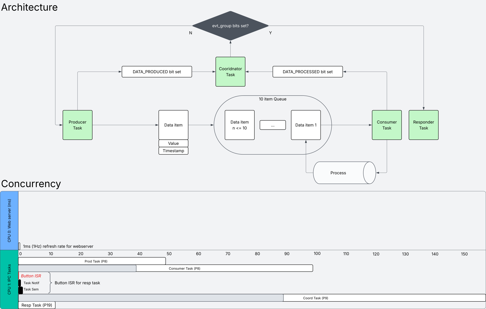

Welcome to my avionics-themed FreeRTOS project! In this capstone, I decided to explore Inter-Process Communication (IPC) and fault injection for attitude packet generation and consummation. The goal is to see how ineffective consumer process times affect data queuing and communication tasks.

The firmware is situated around four tasks; producer, consumer, coordinator and responder. The producer and consumer tasks can be categorized as data tasks, while the coordinator and responder tasks can be categorized as communication tasks.
Data comes in the form of attitude packets containing a random value from -10 to 10 and a timestamp. Attitude packets are genrated by the producer at a rate of 20Hz or 50ms. Once a packet has been formed, it is sent through a freeRTOS queue with a 10ms timeout to avoid delay. The consumer then receives the queue to process it.
The process is implemented as a 40ms delay using vTaskDelay, lower than the packet production rate at 50ms to avoid congestion. However, there is a chance for the process to take 100ms to simulate a queue being overfilled and its respective faults (see Fault Injection & Hazard Overview).
Communication is handled as a group event through event bits. When a producer produces a packet or a consumer finishes processing one, their respective production and process bits are raised. The cooridinator checks when both bits are raised, and if so, signal the responder task to run. The responder receives this notification and logs its notification count.